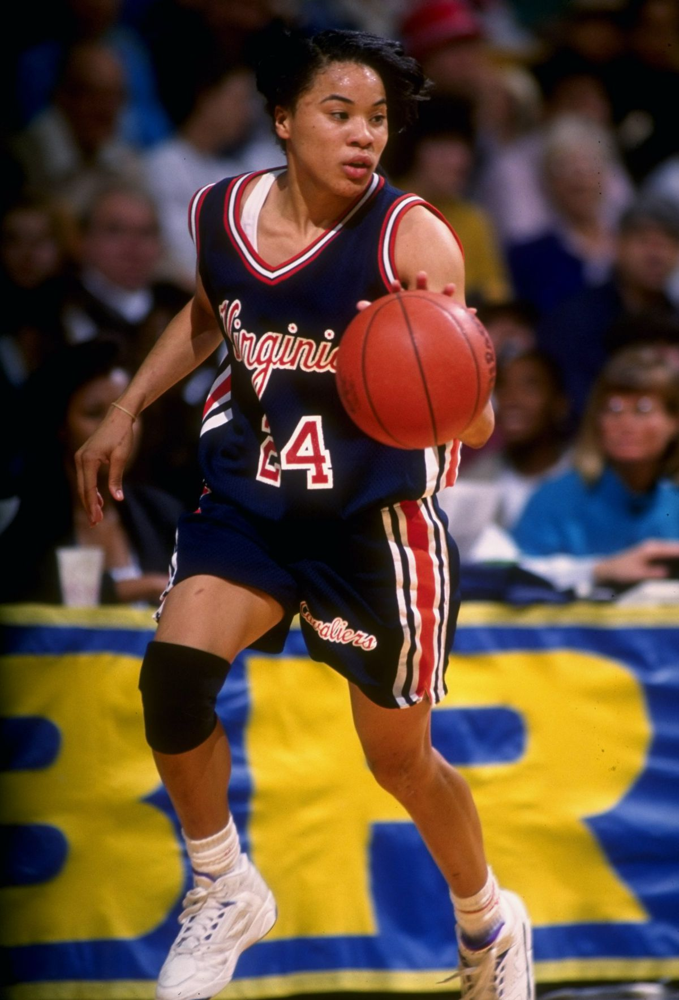
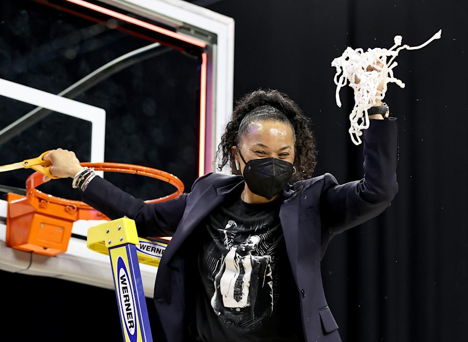
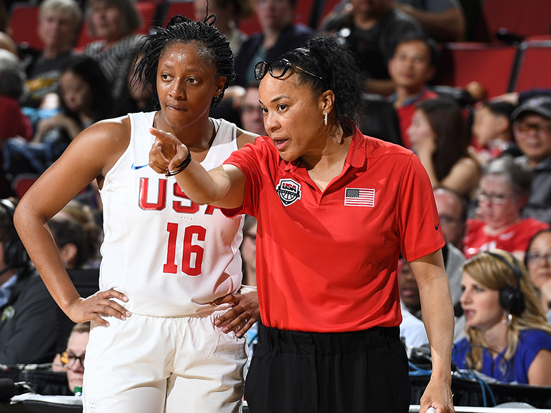
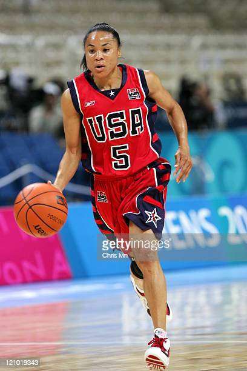

How a Champion Stands Up for What She Believes In
Chapter Headline
COLUMBIA, S.C. — Dawn Staley quickly covered her mouth in embarrassment. She cursed while telling the story of how she got kicked out of a convenience store when trying to buy lottery tickets.
The moment came and went in a blink, a second in almost an hour’s worth of one-on-one conversations with The Athletic spread out over the last month. But it is a succinct way to tell a long story, which is how the head coach of the United States women’s national team and the No. 7 South Carolina Gamecocks finds herself at the confluence of so many forces in a moment so filled with tension.
Staley has reached the peak of her profession twice. Before being one of the most successful and recognizable coaches in the game, she won three Olympic medals as a player and was named one of the WNBA’s top 15 players of all time. Before that, she was the NCAA player of the year twice. Before all of that, she was a Black woman, but even that is not the starting point of this story. It begins with the fact she is Estelle Staley’s child.
Estelle Staley was a housekeeper who raised five children in North Philadelphia. She did not back down. For anybody.
“She was a proud lady,” said Lawrence Staley, the oldest of those five children and a retired corrections officer who has lived in Columbia, S.C., since 1993. Lawrence Staley still remembers his mother giving the neighbor a piece of her mind for sending Lawrence to the grocery store to pick up something using food stamps.
“She didn’t get food stamps, and she didn’t want her children going to the store with them,” he said.
Dawn Staley is the highest-paid women’s basketball coach in the Southeastern Conference. She earns $1.9 million a year from the university, but she hasn’t lost a bit of what her brother describes as the “North Philly tough” instilled by Estelle Staley, who died in 2017.
“I’m my mother’s child, and I’m super proud of that because she’s not one that held her tongue for anybody,” Dawn Staley said. “She’s going to stand up for what she thinks is right. I was brought up by a mother who was a disciplinarian, and there was no gray area in her house. It was either right or it was wrong. My moral compass is probably hers because she instilled that in me.”
That’s why she was instinctively embarrassed by the tamest of expletives. It’s why she almost got kicked out of that convenience store. And it’s why she will not shut up and dribble or shut up and coach or shut up at all, no matter the blowback it brings her way in a state where she is beloved for what her team does on the court, but not always supported in what she believes off of it.
"I would like for people to have an open mind to things."
“It’s really hard for me to walk away from an injustice. And it can be the smallest thing,” Staley said. “I probably don’t like that about myself, that I don’t have enough calmness in me to let it go. Let me think of an example.
“This happened the other day: I’m trying to buy a Megamillions ticket, so I’m in line and it’s close to the time to close. It’s almost 10 o’clock, and I’m asking the cashier, ‘Can you tell me what this means, “powering up?”‘ I don’t really know what that is, so I wanted him to explain to me what that was. So I pulled out like $30. There was somebody behind me, and he looks beyond me and takes the person behind me. ‘You know what you want?’ He wanted 10 tickets. So did I, but I wanted mine powered up, so he gave him the 10 tickets. Now if he won the Powerball, then we’ve got some issues.
“I’m like, ‘Sir, I’m standing here. Those are my tickets.’ He’s like, ‘I can do that.’ I said, ‘You can do that, but that’s not right. Those are supposed to be my tickets.’ So we’re going back and forth, and basically he kicked me out of the store. So I’m thinking in my head, ‘Do I go talk to the manager?’ And then I’m like, ‘Shit, it ain’t worth it.’ But we are probably a week removed from that, and I’m still like, ‘This dude was wrong. He was wrong for doing that.’ And he thinks he’s right.”
Staley did not go back to speak to the manager and counted it as progress because she is trying to let some of the world’s smaller injustices slide. What she will never turn her back from is the fight with the larger injustices she sees every day, the kind that have bubbled up throughout the country in the last year in America.

Staley played professionally at the University of Virginia from 1986-1992.
“Sometimes you just get full,” she said. “I don’t really want to take on all the things I take on with social injustice, but my heart won’t let me shut up. It won’t let me let people get away with saying things that I just feel are off-course. I do think it’s a necessity because there aren’t very many people speaking out on it. There are a lot of people silent on these matters, and these matters impact the very people that we teach, the very people that we coach, the very people that support us, and the very people that don’t support us.”
 Staley coached South Carolina to their first National Championship win in 2017.
Sometimes Twitter users will tag their responses to Staley with the handles of Caslen and Tanner, apparently in hopes their social media snitching will lead to some sort of reprimand.
 Staley began coaching in 2000.
Or tell Staley not to let them do it. Or tell Tanner to tell Staley not to let them do it. Tanner is not going to do that. He met with the players before the season about their decision to sit during the anthem.
Staley began coaching in 2000.
Several of Staley’s players thought she was sharing that point to encourage them to stand for the anthem.
“It’s an interesting time right now,” Callan said. “Regardless of your political leanings, I think it’s an opportunity to try to heal, to unify, to cure, to discuss, to listen and to try and understand if nothing else. I just think that as a person, everybody is a compilation of their experiences, and I think Dawn as a coach is, first and foremost, an educator. She’s trying to educate everyone that she comes in contact with. If not, she would never respond, and sometimes an educator maybe knows they are not that popular or the decision they made is not that popular, but the conversation and the attempt for understanding, I think, is really, really important.”
 Staley played professionally from 1996-2006.
That means she’s “loyal, tough, intelligent and hard-working,” Lawrence Staley said.
Staley is in her 13th season coaching the Gamecocks. South Carolina won the 2017 national championship and finished the pandemic-stopped 2019-20 season as the nation’s unanimous No. 1 team. The Gamecocks have won 45 of their last 49 games, dating back to last season, which ended on a 26-game winning streak. But before she built a powerhouse on the court, she built one in the stands.
Coming in to this year South Carolina has led the nation in attendance for six straight seasons. In that time, only four other schools have averaged more than 10,000 fans in a single season. The Gamecocks are averaging 12,451 per game in that time. In many ways, that engine powered the recruiting that resulted in Staley’s championships.
“Dawn has built a tremendous program there, and she’s built it by inviting people in,” said the director of USA Basketball’s women’s national team, Carol Callan, who has known Staley for more than 25 years.
Now that everyone is inside Staley’s big tent, though, the sharp political elbows of 2020s America are starting to leave some marks. More than 54 percent of South Carolinians voted for Donald Trump in each of the past two presidential elections. Staley did not.
“Proudly” did not, she said.
Staley on the sidelines during the 2020 SEC Championship game. (Photo by John Byrum/Icon Sportswire via Getty Images)
She has political views that some of her fans find baffling. The same is true in reverse.
All of this could continue on in a smooth, if awkward, alliance if Staley would keep what she thinks to herself. She will not. She cannot.
“The views that she expresses are the views that a lot of people have that are just too afraid to say them,” Richland County sheriff Leon Lott said. “She does have a platform by the status that she has earned to be able to say things that need to be said. We do have issues in our country that need to be addressed, and if we continue to hide from them, they will never be fixed. She uses her voice to be clear about them.”
There is a cost associated with that. Staley believes her public stances on issues have cost her teams some fans and even some donors, she said.
“It’s probably caused some people who were on the fence about supporting women’s basketball (not to). I flatly just say what I feel,” she said. “Whether you disagree or not, that’s how I feel. You are not going to take that away from me.”
Her bosses at the University of South Carolina have not tried. Neither school president Bob Caslen nor athletics director Ray Tanner has ever asked her to tone down her approach on any issue, she said.
“Would I? Is that your next question?” Staley asked.
“No. I don’t think what I’m saying is anything that makes the university look bad. Maybe some other people think that, but I don’t. I’m speaking from my perspective as a Black woman. There aren’t a whole lot of Black women in this athletic department. There aren’t a lot of female coaches. I’m speaking from a place that probably not a whole lot of people understand.”
“You tag whoever you want to tag,” Staley said. “The things I say on social media are the same things I would say to an individual. I’m not going to hide behind that.”
Tanner has never considered asking Staley to blunt her approach, he said.
“Have I gotten some phone calls that people weren’t happy with Coach Staley’s approach? … I also got emails of support. It’s been mixed,” he said. “There have been different perspectives, for sure.”
Staley is the most successful head coach on Tanner’s campus. She is 322-100 since she was hired away from Temple in 2008. That level of success gives her a platform she isn’t afraid to use.
“If you said, ‘Tell me a little bit about her,’ I’d tell you she cares, and she cares about so many people and so many things that happen and she uses her platform quite often to express herself about how she feels about things,” Tanner said.
Staley has been outspoken throughout her time at South Carolina. She has expressed social media support for The Central Park Five. She has acknowledged that her collection of autographed baseballs leans heavily left thanks to the inclusion of both Bill and Hillary Clinton and President Joe Biden. But the outcry sparked by the killing of George Floyd and the discord roiling through the end of Trump’s term in office have brought Staley’s stances into sharper light.
The flashpoint at the moment is the fact that the majority of Staley’s players this season have chosen to sit during the national anthem before games. On the night of the Martin Luther King Jr. holiday, two days before Biden would be sworn in as a divided nation’s 46th president and 18 days after a mob had stormed the U.S. Capitol in an attempt to disrupt the peaceful transfer of power, Staley’s team played No. 15 Arkansas.
One thousand socially distanced fans were in the stands. When the Gamecocks cut attendance due to the pandemic, the highest-ranking season ticket holders immediately sucked up the entire allotment. These are the true believers in Staley’s team, but South Carolina is a deeply red state. There are no red MAGA hats in the crowd on this Jan. 18 night, but there are probably a few in the trucks in the parking lot.
At 6:58 p.m., the public address announcer directs the crowd to “please stand, and gentlemen, remove your caps.” Arkansas players and coaches stand together on the court. Only one South Carolina player, junior Elysa Wesolek, stands. The rest of the Gamecocks players remain in their seats on the bench, arms on knees, heads down. Staley and her staff stand, hands clasped in front of them or at their back.
The players’ stance is not popular in South Carolina, a heavily Republican state in a country in which 77 percent of Republicans believe that kneeling during the national anthem to protest racial discrimination is “unacceptable,” according to CBS News polling conducted in July.
“They have their eyes wide open. They have experienced things. Their families have experienced things. That’s what it is based on, those experiences,” Staley said. “I wish people could hear our players. They are so smart. They are so strong. They are so incredibly gifted in their stance. They’re knowledgeable. They are young people who really get it. If people really stopped to ask the simple question, ‘Why?’ They would get it. You may not agree with it, but you’ll get it. You’ll have an understanding of it. But we can’t get there because people just want to tell them not to do it.”
“We had a great conversation,” he said. “She has some very impressive women who play basketball for her. My meeting focused on two things — you have my support, you have the right to express yourself, you live in a country that enables you to do that and I support you, but you should be very cognizant that not everybody will. There will be some consequences. Just be prepared that you will have some people who will be negative, but you have my support to express yourself and represent what you feel is important at this time in your life.”
The players expressed to Tanner that their decision was an attempt to bring awareness to inequality issues in the country.
“It wasn’t, ‘We’re protesting the flag,’ but when it happens during the national anthem, certainly people perceive it a certain way,” he said.
Tanner acknowledged the anthem issue probably has cost the basketball team fans and even donors. An exact accounting of that is hard to come by considering the pandemic has limited tickets.
“I would tell you that I don’t think it’s significant at all,” Tanner said. “If she did lose some fans and maybe some ticket sales, she probably gained some equally.”
Caslen — a retired U.S. Army lieutenant general, combat veteran and former superintendent of the U.S. Military Academy — also met with Staley’s players before the season. He was supportive of the players’ right to protest, Staley said.
Caslen declined to be interviewed for this story through a spokesperson, who instead pointed to statements Caslen made to The (Charleston, S.C.) Post and Courier in December.
“They have an important message. They have an incredibly important message,” Caslen told the newspapers. “I gave 42 years of my life for the right for them to do that. It’s their constitutional right. I think they’re losing their message because of the means of delivery. You have a polarized nation, a polarized view of this, and the people that need to hear it aren’t listening. So the people that are listening are the people that already know it. My opinion is, find another way to get the message out.”
Marty Dempsey, a retired Army general who was the 18th Chairman of the Joint Chiefs of Staff from 2011 to 2015, also declined to speak to The Athletic on the issue. Dempsey is now the chairman of USA Basketball, which installed Staley as the women’s national team coach to replace UConn coach Geno Auriemma in 2017.
“It’s easy when you’re just winning and everybody is happy, that kind of stuff. But right now, we’re in a difficult time in our country, and I think Dawn is attempting to navigate this with conversation,” Callan said. “She’s being supportive of her team. She is not taking any of this lightly. And she is doing what she thinks is right, and I don’t know how you can ask much more of a leader.”
Dempsey has explained to Staley why he believes it’s important for Americans to stand during the playing of the national anthem, and the coach communicated that message to her team, Staley said.
“He shared with me his thoughts on the ritual of standing for the national anthem, and that ritual is for everyone to stand and to unify for 90 seconds. So he thinks it’s really big that we continue to do that and not utilize that space to protest,” Staley said. “I shared this with our team and our staff to give them a different perspective because I haven’t heard that perspective before and I welcomed it.”
“I said, ‘No, I support you in this way, but if somebody shares with me something we hadn’t talked about before, I want to be part of you expanding your stance on this or strengthening your stance,’” she said.
Staley has a history with the flag. In 2004 in Greece, she was the flag bearer for the U.S. delegation in the opening ceremony of what was her final Olympics as a player, calling it a “completely unexpected and incredible honor.”
“I listened to them, and they listened to me,” Lott said.
While America seems to be going through a messy political divorce, Staley marries attributes that many of us have decided are incompatible.
While progressive politically, she’s also an unwavering supporter of law enforcement. Staley is a special deputy with the Richland County Sheriff’s Department and regularly makes patrols with deputies, all while wearing her badge and sidearm.
In fact, the list of people you’ll have to fight if you want to say something bad about Staley probably starts with Richland County Sheriff Leon Lott, who has served in that office for 24 years.
“I highly respect her because she does speak her mind and I think she is a good role model,” Lott said. “I have a 17-year-old daughter that Dawn has watched grow up and she has been a great role model.”
After Lott won reelection to his office in 2020, he had to swear in all his deputies again.
Staley “was right there, front row, and she held her hand up and she swore to protect the Constitution of the United States and the State of South Carolina,” Lott said. “She will speak against bad law enforcement and there’s nothing wrong with that. I do the same thing. People don’t see that side of her. I do. I get to see the basketball coach, but I get to see the person, too.”
Lott spoke to Staley’s players after the killing of George Floyd, and the subject of protesting during the anthem was raised.
“I listened to them, and they listened to me,” Lott said. “They made that decision. That’s a personal right that you have that us in law enforcement and the military, that’s what we fight for, our freedom. Do I stand? Yes, I stand, and I salute. That’s my personal opinion. Dawn stands, too, but she respects those girls and the decision they made and we have to do that. That’s the great thing about America. We all have different views, but we’re all still Americans.”
The college basketball season is unlikely to be the last time Staley faces questions about her team’s approach to the anthem. As the head coach of Team USA, she will certainly be asked for her opinion on social issues at the Summer Olympics in Tokyo, if they are held as currently scheduled. (The IOC rulebook forbids political protest during official Olympic events, which includes the playing of any country’s national anthem.)
“We’ll for sure have lots of conversations on this,” Callan said, “and the conversations aren’t just, ‘What are we going to do symbolically?’ The conversations are also going to be, ‘What can we do to solve the problems we face in this country? What can we do to make things better? What’s the opportunity here?’ Everybody wants to do the right thing. They want to make things better, and they want to bring people along. No one wants to have it be ‘us versus them’ in this country. If you don’t like a political thought, that’s one thing, but I think everybody is hungry, maybe starved, for coming together and finding solutions.”
The prospect of having an outspoken coach at the helm during what could be a fraught and very visible moment doesn’t worry Callan in the least, she said.
“I don’t think you could ask for a better person to be leading any team, and I think she’s the perfect person at this time to be leading our Olympic team,” Callan said.
Some might find the friendship between the 67-year-old White southern sheriff and the 51-year-old North Philly raised basketball lifer surprising, but Staley does not. Lott, 67, and Staley, 51, met shortly after Staley was hired, when they filmed a public service announcement together, and they hit it off fast.
“Sheriff is a great guy, like really a great guy,” Staley said.
Staley would have been a cop if she hadn’t had a gift for basketball, Lott said.
“I’m serious,” he said. “She wants to help people and that’s what law enforcement should be about — it’s about helping people and she wants to help people. She has the gift of gab, she can talk. You have to have good communication skills to be a law enforcement officer. She has that. We deal with people in crisis, she does the same thing. You have to be a mental health counselor sometimes. You have to be a motivator sometimes. You have to be a disciplinarian sometimes. All those things that you see on the basketball court, that’s the same thing a police officer does.
“She would have made a great cop.”
Staley is not so sure. She was flattered by Lott’s description of her strengths, but isn’t sure she has the temperament for the confrontations the job sometimes requires. She has another story to illustrate this point. This one is from a trip she took to Las Vegas with friends, when the group decided to participate in a police simulation exercise for entertainment.
“So I’m outside the door we have to talk through, and I’m like, ‘Y’all go ahead. I’m just going to come in last and play my role. I’ll just be the Robin to your Batman,’” Staley said. “So we go in there, and the scene was, there was somebody that was trying to break into a car or it was their car and they’re just trying to unlock it. You have to figure it out. I went in there, and something came over me. I’m like, ‘Put that down!’ The guy’s like, ‘What? I’m just trying to unlock my car.’ I said (voice rising), ‘Put the instrument down!’ And he wasn’t listening to me. So he actually put it down and he kind of reached in his pocket, right? So I’m like, ‘Pow, pow, pow.’ And he’s looking at me, like … it escalated in a matter of seconds … seconds. And I’m like, ‘He reached in his pocket! I don’t know if he’s reaching for a gun!’ It’s so weird.”
Staley can be forgiven for not responding like a professionally trained police officer because she is not. But she points out that it provides a clear example of the intense and complex situations police officers can face. That’s an important point to her. She is a woman, she said, who wants to hear both sides of an argument.
“I would like for people to have an open mind to things,” she said. “I don’t mind discussion on things that people disagree with me about, but you have to have the right kind of discussion. You’re not going to call out my name. You’re not going to tell me, ‘Do this or else.’ You’re not going to do that to me. I’m never going to be forced to think a certain way or do certain things just because someone disagrees with it.”
Staley covets a face-to-face conversation on these issues. She almost always has to settle for online sparring sessions, which can sometimes get salty.
“I don’t think she’s not listening to people,” Callan said. “I think she’s trying to have a conversation with them. And at the moment, there are clearly people who don’t agree with what she’s doing, but it’s not like she’s shutting anyone out. I’m sure it’s a difficult situation for her, as well.”
Staley’s political proclivities may not fit in with those of most South Carolinians, but her religious beliefs do. Seventy-six percent of South Carolina residents are Christian, according to the Pew Research Center. Staley is, too. In fact, she believes that God put her in the middle of South Carolina for a reason, and that this season of discontent in the country might very well be that reason.
“Christians, they know right from wrong, and that’s what I’m led by,” she said.
Lawrence Staley described his youngest sister as “headstrong, stubborn.”
“But she was also sweet and very helpful,” he said.
He is the least surprised man in Columbia to see his sister speaking out.
“Nah, that’s not how we do it,” he said. “If you have a platform, use it. Use it for good trouble. Everything she does is North Philly. She’s North Philly tough.”
Those attributes, plus a large helping of talent, took her from the blacktop courts of Philly to the University of Virginia, where she managed to survive a serious social culture shock to become the national player of the year twice. The four years at Virginia not only boosted her as a player but also as a citizen, she said.
“Here’s what happens to me in my life as I reflect on it: Something always occurs in my life that preps me for something that happens later on in my life,” she said. “I learned so many lessons at Virginia, being at a predominantly white university. Then I end up here at South Carolina, where you get to exercise some of the stuff you learned at Virginia and how to navigate through it and also navigate through it and be who I am and not sacrifice who I am to please anybody or chum it up with anybody. I can’t be anybody but me.”
The next step in her journey came in the shadow of legendary Temple men’s basketball coach John Chaney. She and Chaney became close friends while Staley was the Owls women’s coach from 2000-08. They stayed in regular contact after Staley left the school, and the news of his death in January rocked her.
Chaney was a noted firebrand, unafraid to take on any fight he saw as worthy. The most important thing he taught Staley?
“How you have the stamina to fight what you think is blatantly wrong for the people that you work with every day,” she said.
It’s the lesson she’s still learning, and the fight she’s still fighting.
“I would probably be a wreck if I wasn’t able to get it out. If it’s contained inside of me, I would be a wreck. I am able to get it out and feel good about it,” she said. “I’m not a person who really stresses a whole lot. I don’t think I do. I don’t take blood pressure medicine, thankfully. I think when you are in a place where you feel like you’re doing the right thing, that should be a stressless place, even if people disagree with what you’re saying.”